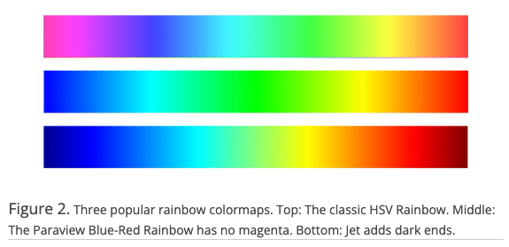
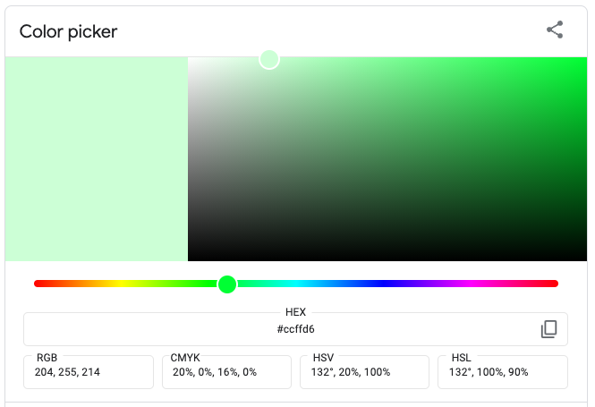

You’ll probably iterate on them as you sit with your visualization and of course, as you get feedback from others.
02:00
There are a number of different color spaces that are used to represent and define color. HSV and HSL are used commonly in color pickers (e.g. Google color picker). HCL underlies some default {ggplot2} parameters. You don’t need to worry much about the underlying theory of color spaces, but know that changing any of the parameters (e.g. hue, saturation, etc.) can influence how we perceive information in a data visualization.
Image source: Which color scale to use when visualizing data, by Lisa Charlottte Muth. This is the first article of a 4 part series (Part 2 / Part 3 / Part 4) – I highly recommend reading!
We’ll be testing out different palettes throughout this lesson. Instead of having to retype the code for our plots each time, let’s create and save two versions of a penguin scatterplot. We can then call either of these plot objects to modify with different color scales:
Requires a categorical color scale
Color vision deficiency aka colorblindness is the decreased ability to see color or differences in color. It’s estimated that about 1 in 12 men (8%) and 1 in 200 women (0.5%) are affected (Wikipedia).
Color plate tests are used to help identify different forms of color blindness. Try using the Let’s get color blind Chrome extension to emulate different forms of colorblindness while looking at the above plates. Image source: American Optometric Association


colors don’t follow any natural perceived ordering (no innate sense of higher or lower)
perceptual changes in rainbow colors are not uniform (e.g. colors appear to change faster in yellow region than green region)
insensitive to color vision deficiencies
Problematic, perceptually nonuniform and unordered rainbow colormaps

Improved, perceptual uniform and diverging rainbow colormaps

Image source: Ware C, Stone M, Albers Szafir D (2023) Rainbow colormaps are not all bad. IEEE Computer Graphics and Applications 43:88-93 10.1109/MCG.2023.3246111
The viridis color scales are perceptually-uniform (even when printed in gray scale) and colorblindness-friendly:
Continuous viridis scales

Binned viridis scales

There are a number of different ways to apply viridis color scales, but I often opt for scale_*_viridis_*() functions, which come pre-loaded with {ggplot}.
The ColorBrewer color scales provides color schemes for maps and other graphics. There is also a web-based interface for generating palettes.
{RColorBrewer} comes with a couple useful functions for quickly viewing and assembling your palette’s HEX codes:
Use the right function (all pre-loaded with {ggplot2}) for the type of data / palette:
Use scale_color_brewer() to apply qualitative palettes
Use scale_color_distiller() for unclassed versions of continuous color scales
Check out the documentation and play around with some alternative options.
02:00
Rather than color points by body_mass_g, we can fill points by body_mass_g. Then, we need to change the shape of our points to 21, which is the code for an outlined, fill-able point:
Recall that colors are low on the hierarchy of elementary perceptual tasks. When possible, avoid conveying important information purely through color – consider how you might additionally use shapes, symbols, typography, or annotations.
Figure 2 from Apigo A and Oono R (2022) Plant abundance, but not plant evolutionary history, shapes patterns of host specificity in foliar fungal endophytes. Ecosphere. 13(1):e03879. https://doi.org/10.1002/ecs2.3879

It would be impossible to list out on one slide all the palette packages available for use, but the {paletteer} package gets close to doing just that.
It provides a common interface for accessing a near-comprehensive list of palettes (over 2,000!!) across various packages.
Explore the extensive list of supported palette packages!
paletteer_*() functionsscale_*_paletteer_*() functionsFind most palettes on the R Color Palettes website

Click on any palette for more information & example plots

Update the colors of the plots below, either by using the {paletteer} package or by following the documentation for any specific package. It’s helpful to start by looking over the list of supported packages.
03:00
superbloom3 palette from {calecopal}, applied using the paletteer::scale_color_paletteer_d()
WindCave palette from {NatParksPalette}, created using {NatParksPalette} & applied using scale_color_gradientn()
There are lots of different variations of color wheels, but look for hues along the outer edge:

Common color models: RYB (used by painters), RGB (used in electonic displays), CMYK (used in modern printing). Image source: medium.com
When using a color picker, adjust the HEX code sliding scale to pick a hue and ensure that the selector is set to the far right edge of the box:

There are lots of great color pickers out there, though Google color picker is a quick one to navigate to. HTML color codes is my personal favorite.

Image source: htmlcolorcodes.com
blue-green & red-orange are complementary and therefore offer the strongest possible contrast
Find descriptions of blue-green & red-orange on htmlcolorcodes.com

We associate meaning with different hues (e.g. cold / sad = blue, hot / angry = red), and importantly, these associations can differ among cultures.
Source: Information is Beautiful

Source: Information is Beautiful
“lightness, brightness, and saturation can communicate the level of seriousness, intensity, and emotional weight in a visual work” (Cédric Scherer)
“lightness, brightness, and saturation can communicate the level of seriousness, intensity, and emotional weight in a visual work” (Cédric Scherer)
(Right) COVID-19 tracker by the Johns Hopkins University (screenshot from 2020-07-27, courtesy of Cédric Scherer). Red tends to elicit panic / fear. (Left) A map of confirmed COVID-19 cases by Datawrapper (screenshot from 2020-07-27, courtesy of Cédric Scherer). Blues and greens help to avoid such a strong fearful emotional response.
Though it may be temping to use bright / bold colors to grab attention, it can lead to eye strain and make it more challenging for your readers to focus on your chart.
Though it may be temping to use bright / bold colors to grab attention, it can lead to eye strain and make it more challenging for your readers to focus on your chart.
1. adjust the saturation (i.e. the level of intensity of a color)
2. adjust value: tint (add white), tone (add gray), or shade (add black)
3. increase transparency (e.g. using the alpha argument)
1. adjust the saturation (i.e. the level of intensity of a color)
2. adjust value: tint (add white), tone (add gray), or shade (add black)
3. increase transparency (e.g. using the alpha argument)
Green (HEX #00FF33 / 132° on the color wheel) with lightness adjusted to 90% (more white)

Green (HEX #00FF33 / 132° on the color wheel) with lightness adjusted to 10% (more black)

1. adjust the saturation (i.e. the level of intensity of a color)
2. adjust value: tint (add white), tone (add gray), or shade (add black)
3. increase transparency (e.g. using the alpha argument)
The default lightness for ggplots is set to 65%
1. adjust the saturation (i.e. the level of intensity of a color)
2. adjust value: tint (add white), tone (add gray), or shade (add black)
3. increase transparency (e.g. using the alpha argument)
Green (HEX #00FF33 / 132° on the color wheel) with default opacity (100%)

Green (HEX #00FF33 / 132° on the color wheel) with opacity reduced to 50%

Be sure to consider what we’ve already discussed:
And also consider some other important sources of inspiration:

For qualitative (categorical) data :
scale_*_manual()For quantitative (numeric) data:
Unclassed palettes  :
:
scale_*_gradient(): creates a two color gradient (low-high)scale_*_gradient2(): creates a diverging color gradient (low-mid-high)scale_*_gradientn(): creates a n-color gradientClassed palettes :
scale_*steps(): creates a two color binned gradient (low-high)scale_*_steps2(): creates a diverging binned color gradient (low-mid-high)scale_*_stepsn(): creates a n-color binned gradientUse the fill variant of the above functions for areas, bars, etc. and the color variant for points, lines, etc.
I recommend saving your palette to a named vector outside of your ggplot – this prevents lengthy palettes from creating cluttered ggplot code and allows you to reuse your palette across multiple plots:
Here, we scale our colors for a categorical variable (species) using scale_color_manual():
We should always be consistent with our colors. E.g. if Gentoo penguins are blue in one plot, they should be blue in all plots. Notice that our colors don’t “stick” with the species they represent, but rather they’re applied in the order that they appear in our palette:
Adelie, Chinstrap & Gentoo penguins
The scale_*_identity() functions allows you to map aesthetic values from your data frame to individual points. They will not produce a legend unless specified using guide = "legend".
Create your own palettes and use them to scale colors in the plots below:
05:00
It’s okay to use saturated / brighter colors in moderation.
We tend to associate more saturated colors with greater values.

Image source: New York Times

Image source: {ggdensity} pkgdown site.
Ensure consistent use of colors across multiple visualizations that display the same groups.
Use gray for less important groups / values, annotations, contextual information, etc.
Use intuitive colors (e.g. green for forest, blue for water) but avoid stereotypes (e.g. pink for women, blue for men).
Try a cold color for men (e.g. blue or purple) and a warmer color for women (e.g. yellow, orange or a warm green).
In most cases, readers will associate bright colors with lower values and darker colors with higher values. Build gradients accordingly.
“humans perceive bright colors on elevation maps to represent a high altitude, with darker colors representing naturally low-lying and shady areas like valley” (Cédric Scherer, Colors and Emotions in Data Visualization)
Most readers will associate dark colors with “high / important” and bright or light colors with “low / less”. Using a gradient palette with categorical data may imply a ranking of categories where there shouldn’t be.
Gradients should also work in black and white.
Readers are generally better able to distinguish colors on a gradient better if they are encoded through both lightness and two (sometimes three) carefully-selected hues.


.png){kind=link}